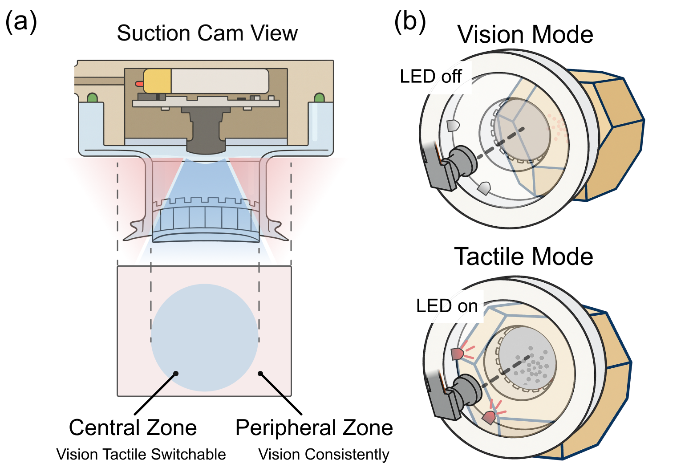
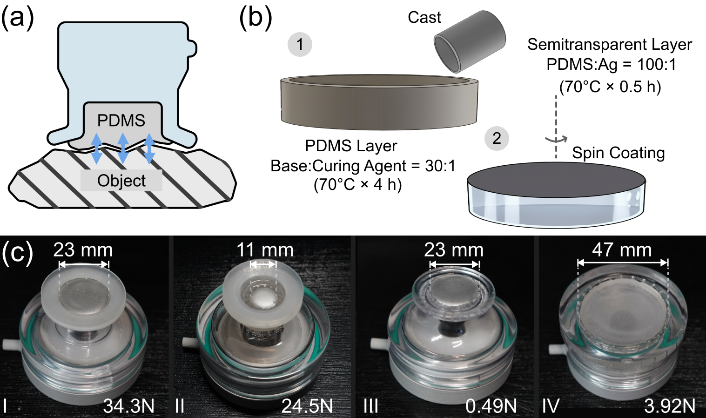

Hardware Design
System Architecture and Integration
The system adopts a modular layered architecture integrating pneumatic actuation, electronic control, and optical sensing. The bottom housing provides the pneumatic interface and contact surface with a central groove for the PDMS membrane; its airway geometry differs between vacuum and Bernoulli configurations while the membrane mounting interface remains consistent. The top housing mounts a PCB assembly centered on an ESP32S3 microcontroller (3.7 V, 300 mAh battery, 12.5 μH wireless charging coil), streaming 640×480 images at 30 Hz over Wi-Fi. The electronic module remains identical across both suction modes, enabling wireless operation with electrical decoupling from the robot arm.

Vision-Tactile Sensing System
A single 180° fisheye camera captures two functional zones: the central zone enables switchable vision-tactile sensing via illumination control, while the peripheral zone maintains continuous spatial awareness. In vision mode, LEDs remain inactive, allowing ambient light through the membrane for object detection. In tactile mode, LEDs illuminate the membrane internally, imaging deformations induced by contact forces. Multimodal fusion with multi-head attention (8 heads, 512-d) achieves 100% object recognition accuracy across 13 categories, outperforming vision-only (82.5%) and tactile-only (46.7%) approaches.
Dual-Zone Sensing

The peripheral zone maintains environmental awareness through continuous vision for approach planning and obstacle detection, while the central zone provides high-resolution contact imaging via LED-controlled illumination switching. The system switches modalities in real-time through the ESP32S3 microcontroller with dynamic camera exposure and gain adjustments, enabling simultaneous spatial context and precise contact detection for robust manipulation.
PDMS Membrane Design

The dual-layer membrane employs a PDMS base layer (30:1 ratio, 70°C × 4h) providing mechanical compliance that captures surface details, and a semitransparent reflective layer (Ag:PDMS 100:1, 70°C × 0.5h) providing the reflective surface for photometric tactile imaging. Four modular bottom configurations (I–IV) implement varying membrane diameters: Configurations I–II are optimized for vacuum operation with deformable objects and tactile sensitivity, while III–IV support Bernoulli operation. Adhesion force ranges from sub-Newton to over 40 N across configurations.
Reconfigurable Dual-Mode Suction Mechanisms


Mechanical configurations: vacuum (left) and Bernoulli (right) suction mechanisms
FlexiCup supports vacuum and Bernoulli suction through modular bottom housing reconfiguration. Vacuum mode generates adhesion through negative pressure, requiring sustained contact that induces continuous membrane deformation for dense tactile feedback. Bernoulli mode creates contactless lifting through outward airflow, supporting visual perception and tactile verification during positioning. Both modes share the identical dual-zone sensing architecture and control pipelines, confirming sensing-actuation decoupling where mode selection depends on task requirements rather than sensing constraints. The pneumatic system employs a vacuum pump (750 W, 140 L/min, −90 kPa max) and an air compressor (800 W, 65 L/min, 0.8 MPa) for the respective modes.